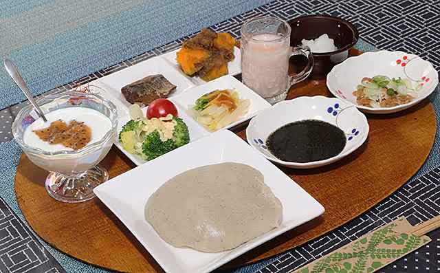
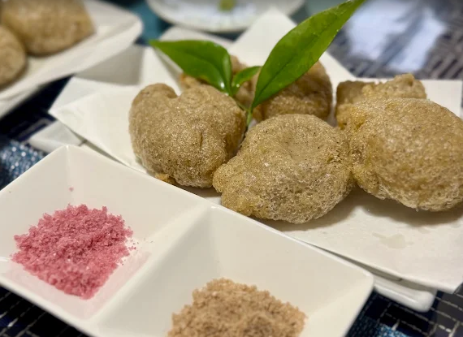
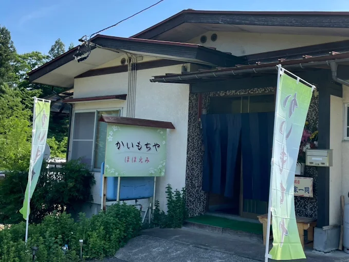
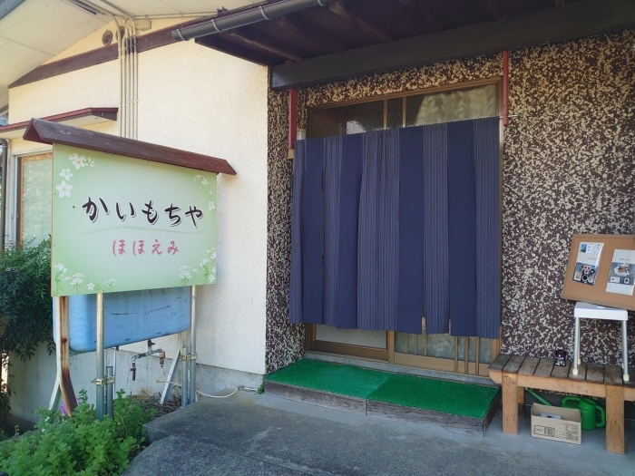
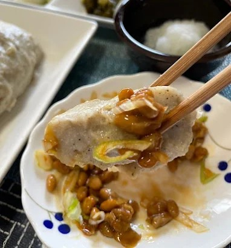
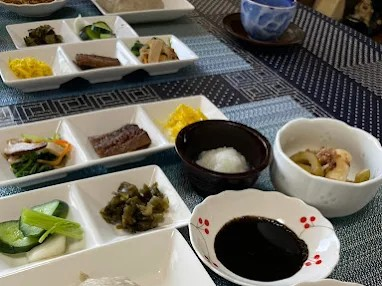
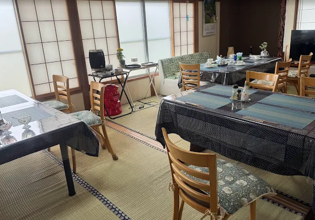

季節の素材を
生かした郷土料理を
気軽に楽しめる和食店



メニューのお取り置きやご不明な点など、
お気軽にお電話ください。
そんな方は
「かいもちや ほほえみ」へ

山形県白鷹町にある「かいもちや ほほえみ」は、郷土料理を気軽に楽しめる和食店です。
昔ながらの「かいもち」や、やさしい味わいの「そばがき」をはじめ、ランチにもぴったりな和食をご用意。
季節の素材を生かしたお料理と、ほっと落ち着ける空間で、地元の味をゆったりとお楽しみいただけます。
テイクアウトにも対応しており、ご自宅でも白鷹町ならではの味わいをご堪能いただけます。

白鷹町の郷土料理「かいもち」を、出羽かおりを使用して丁寧にご提供。
できたてならではの、あたたかくやさしい味わいをお楽しみいただけます。

かいもちセットは、副菜やスープ、デザートまで付いた品数豊富な内容です。
自家製野菜を使った小鉢もあり、見た目も華やかでランチにもぴったりです。

一般住宅を活かした店内は、どこか懐かしく落ち着ける雰囲気。
白鷹町で郷土の味をゆったり楽しめる、隠れ家のようなお店です。
蕎麦屋はよくありますが、かいもち専門店は珍しいです
場所がわかりにくいですが、そこが隠れ家のような雰囲気があり、心地よかったです
店の作りも実家に帰ってきたような心地良さがありました
かいもちは、想像していたよりも、かなり柔らかいです
夫と2人でいきましたが、素敵なデートになりました！
蕎麦屋にたまにかいもちがあるのはわかりますが
ここはかいもちだけ
かいもち専門とは珍しいなと
利用
かいもち即ちそばがき
かいもちセットを頼み
かいもちはなかなか柔らかく
良い感じな
食べやすいし
いい柔らかさ
あと
揚げかいもちも頼みまして
こちらは
周りはカリッとしていて
サクサクな感じで
中はとろりとした良さが
こちら
自分は揚げかいもちの方が好きかな
美味
揚げかいもちだと塩とかより
大根おろしやごまとかも良さげかなー
少なめな感じもしますが
追加とかあるから
そちらを利用するのもいいのかな
かいもち専門だから客はあまり混まないかな
駐車場も狭めだし
のぼり旗はたくさん立ってるから
目立ちますが
まあまあ
こういうとこ
楽しいな